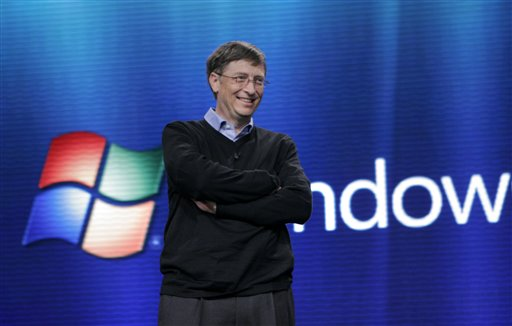
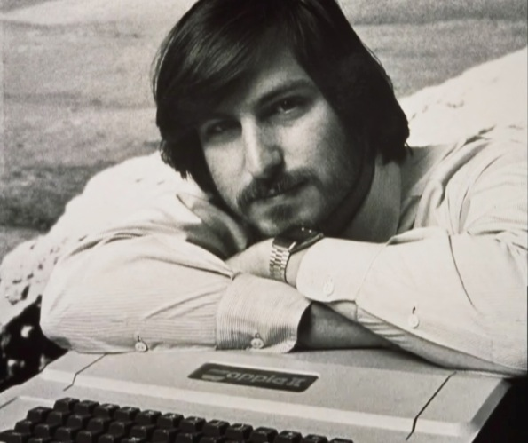

BILL GATES
 William Henry "Bill" Gates III (born October 28, 1955)[2] is an American business magnate, investor, programmer,[3] inventor[4] and philanthropist. Gates is the former chief executive and current chairman of Microsoft, the world’s largest personal-computer software company, which he co-founded with Paul Allen. He is consistently ranked in the Forbes list of the world's wealthiest people[5] and was the wealthiest overall from 1995 to 2009—excluding 2008, when he was ranked third;[6] in 2011 he was the wealthiest American and the world's second wealthiest person.[7][8] According to the Bloomberg Billionaires List, Gates is the world's richest person in 2013, a position that he last held on the list in 2007.[1] During his career at Microsoft, Gates held the positions of CEO and chief software architect, and remains the largest individual shareholder, with 6.4 percent of the common stock.[a] He has also authored and co-authored several books. Gates is one of the best-known entrepreneurs of the personal computer revolution. Gates has been criticized for his business tactics, which have been considered anti-competitive, an opinion which has in some cases been upheld by the courts.[11][12] In the later stages of his career, Gates has pursued a number of philanthropic endeavors, donating large amounts of money to various charitable organizations and scientific research programs through the Bill & Melinda Gates Foundation, established in 2000.[13] Gates stepped down as chief executive officer of Microsoft in January 2000. He remained as chairman and created the position of chief software architect for himself. In June 2006, Gates announced that he would be transitioning from full-time work at Microsoft to part-time work, and full-time work at the Bill & Melinda Gates Foundation. He gradually transferred his duties to Ray Ozzie, chief software architect, and Craig Mundie, chief research and strategy officer. Gates's last full-time day at Microsoft was June 27, 2008. He remains at Microsoft as chairman.
STEVE JOBS
 Steven Paul "Steve" Jobs ( February 24, 1955 – October 5, 2011)[5][6] was an American entrepreneur,[7] marketer,[8] and inventor,[9] who was the co-founder (along with Steve Wozniak and Ronald Wayne), chairman, and CEO of Apple Inc. Through Apple, he is widely recognized as a charismatic pioneer of the personal computer revolution[10][11] and for his influential career in the computer and consumer electronics fields, transforming "one industry after another, from computers and smartphones to music and movies".[12] Jobs also co-founded and served as chief executive of Pixar Animation Studios; he became a member of the board of directors of The Walt Disney Company in 2006, when Disney acquired Pixar. Jobs was among the first to see the commercial potential of Xerox PARC's mouse-driven graphical user interface, which led to the creation of the Apple Lisa and, one year later, the Macintosh. He also played a role in introducing the LaserWriter, one of the first widely available laser printers, to the market.[13] After a power struggle with the board of directors in 1985, Jobs left Apple and founded NeXT, a computer platform development company specializing in the higher-education and business markets. In 1986, he acquired the computer graphics division of Lucasfilm, which was spun off as Pixar.[14] He was credited in Toy Story (1995) as an executive producer. He served as CEO and majority shareholder until Disney's purchase of Pixar in 2006.[15] In 1996, after Apple had failed to deliver its operating system, Copland, Gil Amelio turned to NeXT Computer, and the NeXTSTEP platform became the foundation for the Mac OS X.[16] Jobs returned to Apple as an advisor, and took control of the company as an interim CEO. Jobs brought Apple from near bankruptcy to profitability by 1998.